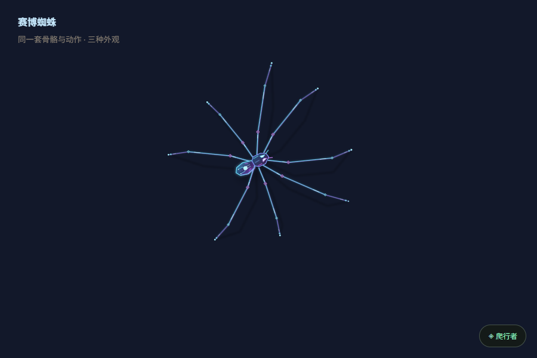
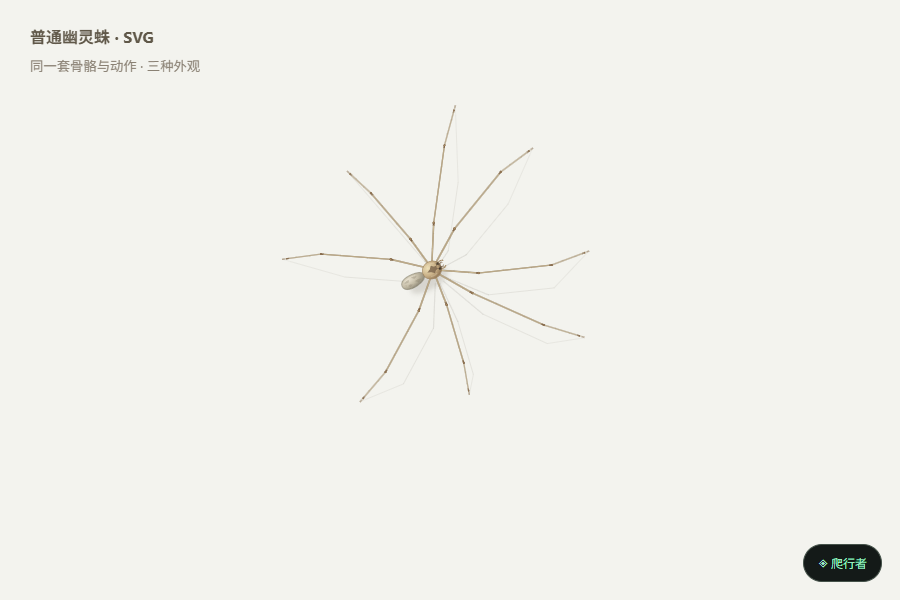
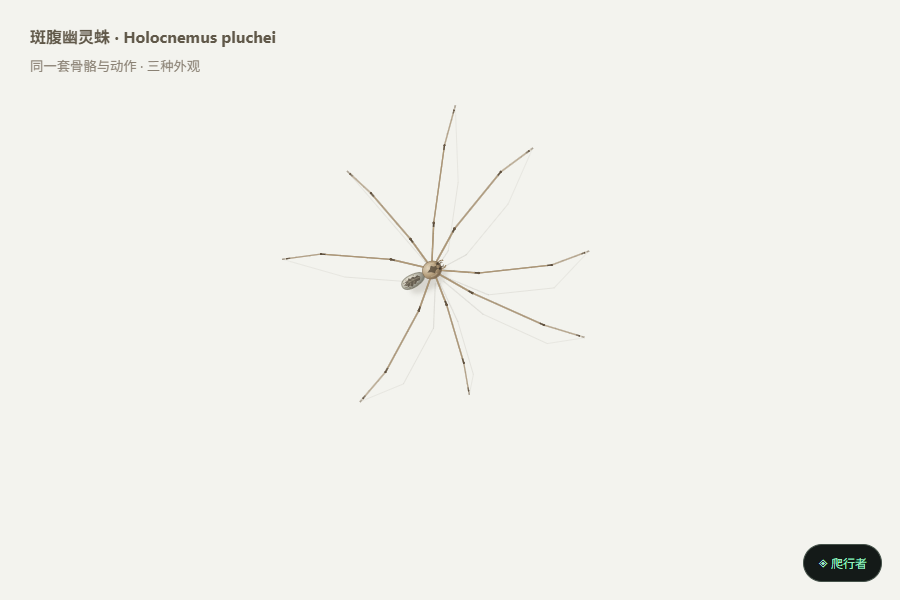
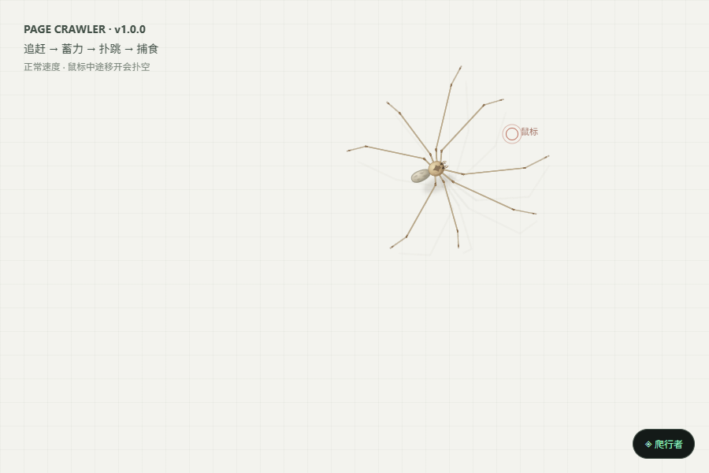
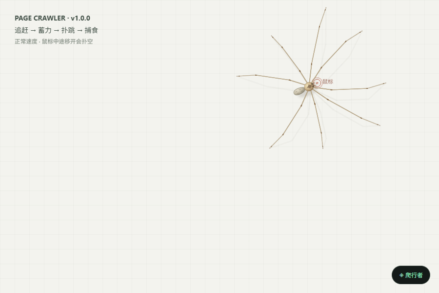
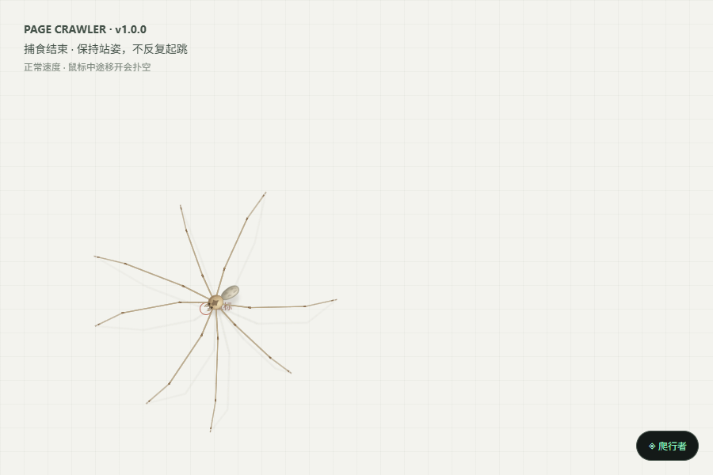
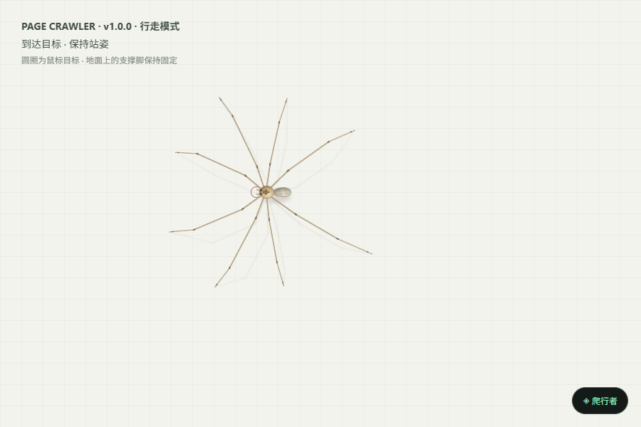
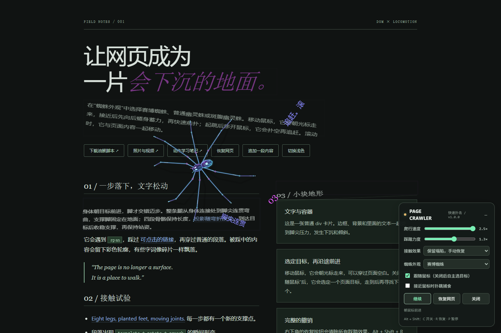
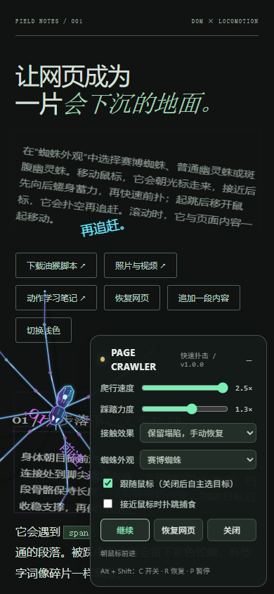

动作照片与正常速度回放
截图与视频均来自实际浏览器运行。快速扑击、目标逃脱、转向和最终站姿可以分别观察。
三种蜘蛛外观



在动作试验场的“蜘蛛外观”中切换。两种自然款共用腿长、行走、转向和扑跳模型；外观分别参考 Pholcus phalangioides 与 Holocnemus pluchei。
快速扑击 · v1.0.0
向后蜷身蓄力 → 快速前扑与捕食 → 鼠标逃开后的扑空 → 继续追赶 → 再次捕食 → 静止站姿。




桌面与窄屏


行走、转向与停止
当前 v1.0.0 正常速度行走录像，录制时关闭捕食；使用项目录制工具可重新生成。